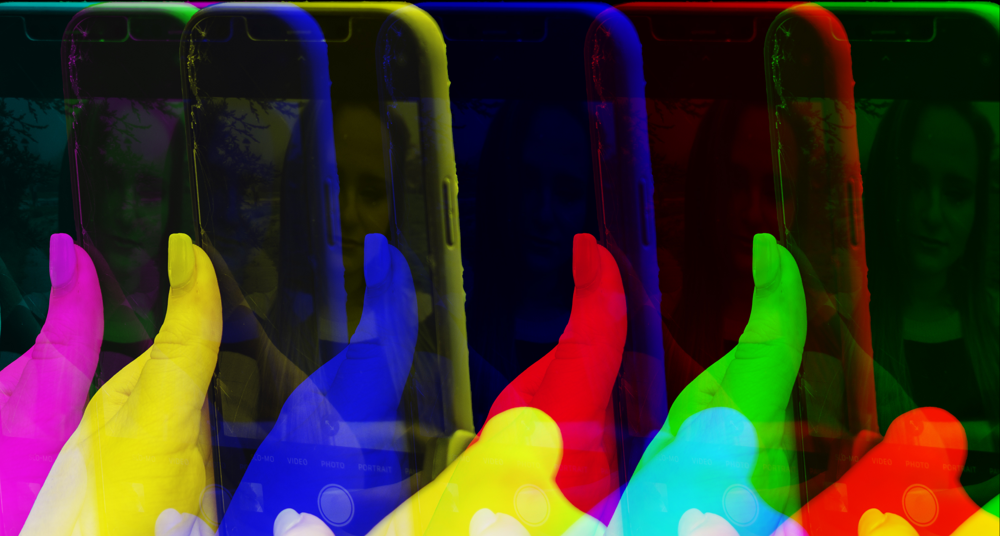
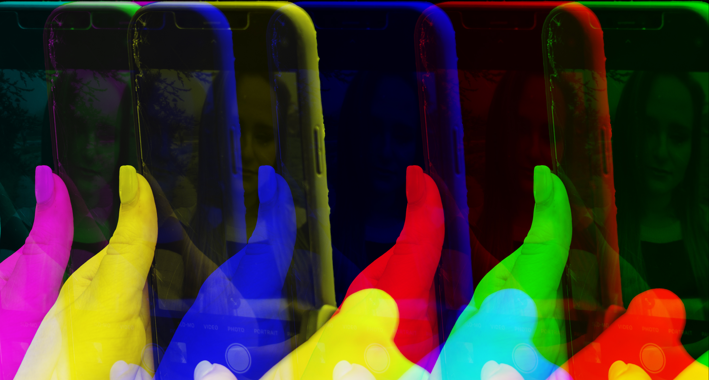

Selfie Generation
Sarah Brown
Social media is used to make an online presence, showcasing oneself and communicating with others. People in Generation Z rely on social media, using TikTok, Twitter, Instagram, and other platforms. Yet, the world of social media may be harmful, especially for this generation.
In Sarah Brown’s Selfie Generation, a series of photographs conveys the difficult emotions behind social media’s pleasing photos. The harsh reality is that nobody knows the real emotions behind someone else’s image. This is because people tend to only post the “best” of themselves in order to gain traction and attention.
Selfie Generation suggests that people focus too much on social media to the extent that they become out of touch with reality. For example, in a memorable image a young woman stares at the phone, waiting for an Instagram like. This is a real reflection of life with social media. Most of the photographs in this series feature young women who are blurred out or fractured by their own reflections, as though they can hardly see themselves. Doppelgangers appear alongside the young women, implying the different personas and fractured identities people create online. Selfie Generation asks viewers to question what a healthy online environment might look like by picturing the opposite.


 
